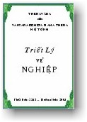

BuddhaSasana
Home Page
This document is written in Vietnamese, with Unicode
Times font
|
 |
Theravàda Triết lý về NghiệpHòa
thượng Hộ Tông In lần
thứ nhất tại Sài Gòn: 1974 |
Lời nói đầuTriết lý về nghiệp là nền tảng kiên cố làm cho các tôn giáo có những quan điểm([1]) dị đồng. Các tôn giáo khác cho rằng: việc làm ăn của người mà có quả báo, như thế nào đó, là tùy ở "Một cái" có thế lực tối cao cho thực tiễn. Họ gọi "một cái" đó là đấng Tạo hóa hay là đức Phạm thiên. Nhưng Phật giáo thuyết trái ngược với các tôn giáo khác rằng: người là kẻ tạo nghiệp. Nghiệp là điều qui định tự nhiên của đời. Nó cho quả phải thực thi như thế nầy như thế kia. Nó là điều chỉnh lý([2]) bất biến. Sự xoay vần của nó, ví như bánh xe có phận sự xoay tròn vậy. Chúng ta là người tạo nghiệp, theo ý nghĩa tương phản, nghiệp không làm gì được người. Quả của nó phân hạng chúng sinh khác nhau ấy cũng do chúng sinh tạo nghiệp riêng biệt. "Tạo lành quả cũng lành, tạo dữ quả cũng dữ". Những nhà khoa học hiện đại, thừa nhận căn bản "Nghiệp" trong Phật giáo vì họ thấy rằng: sự động tác và sức phản ứng hằng có quả ngang nhau và tương phản nhau. Thí dụ: như sự ném quả bóng, ta thấy rằng: ném mạnh thì quả bóng dội lại mạnh, ném nhẹ thì quả bóng dội lại nhẹ. Đây là nghiệp vậy. Vấn đề "Nghiệp" trong quyển sách nầy dẫn chứng cớ ra để giải thích, làm bằng cho thấy hiển nhiên cho chư quý độc giả dùng để điều tra, ngẫm nghĩ không nên vội bỏ. Ví bằng không để ý đến căn bản "nghiệp" thì Phật giáo không có ý nghĩa và thú vị gì nhiều đến ta và toàn thể nhân loại. Có kẻ cho rằng: "nghiệp" là một lợi khí của hàng trí tuệ viên dẫn ra để đàn áp và trấn tỉnh lòng người thiển kiến. Như thế là sự hiểu biết sai suyển([3]) vô căn cứ. Vì Phật giáo chẳng phải là lợi khí của ai và và cũng chẳng dạy kẻ nào phải co tay rút chân cả. Mong rằng sự học vấn về "nghiệp" theo căn bản Phật ngôn dạy dầu sao cũng có lợi không nhiều thì ít đến chư quý độc giả và xin nhớ rằng "nghiệp" không làm gì được người, chính người riêng biệt tạo nghiệp. Như nước mát, lửa nóng. Nếu mó vào thì nước cho mát theo phận sự của nó; lửa cũng cho nóng theo phận sự của lửa, chỉ tuỳ người tự mó vào mà thôi. Chúng tôi xin hồi hướng quả phúc sự phiên dịch quyển kinh nầy đến tất cả Chư Thiên trong sa bà thế giới cùng cha mẹ thầy tổ các bậc ân nhân và hàng Phật tử. Cầu Chư Thiên hoan hỉ hộ trì tất cả chúng sinh nhất là toàn thể Phật giáo đồ hằng mau đoạt được mục đích cứu cánh giải thoát. Mong thay! -oOo- ([1]) Quan điểm: căn cứ của kiến thức để nghiên cứu mọi vấn đề. -ooOoo- |
Chân thành cám ơn Tỳ kheo Thiện Minh đã gửi tặng phiên bản điện tử (Bình Anson, 03-2001)
update: 14-03-2001